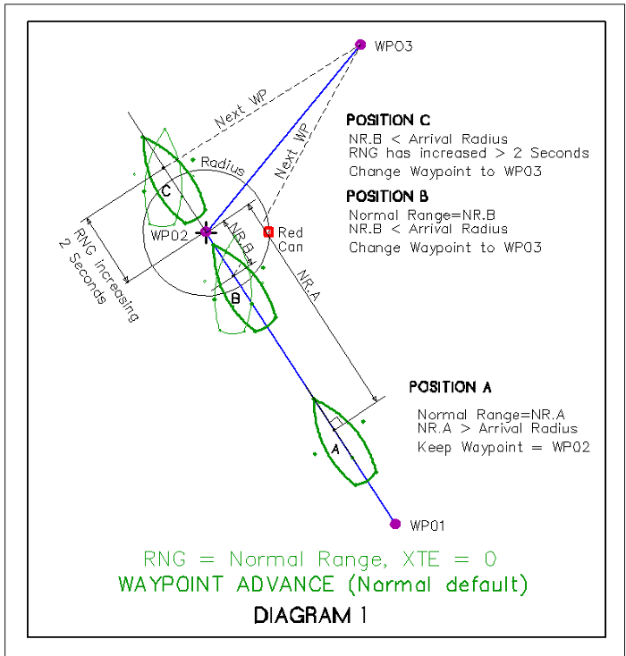
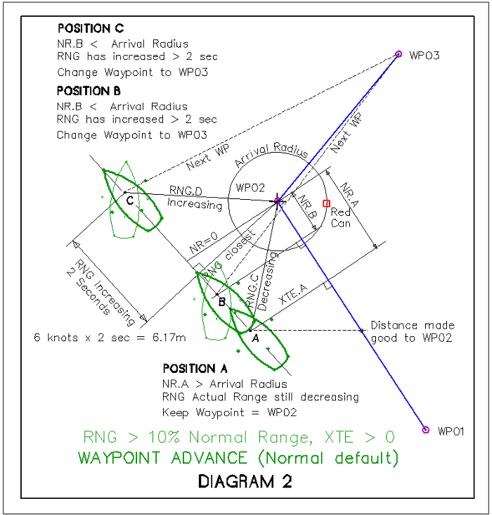
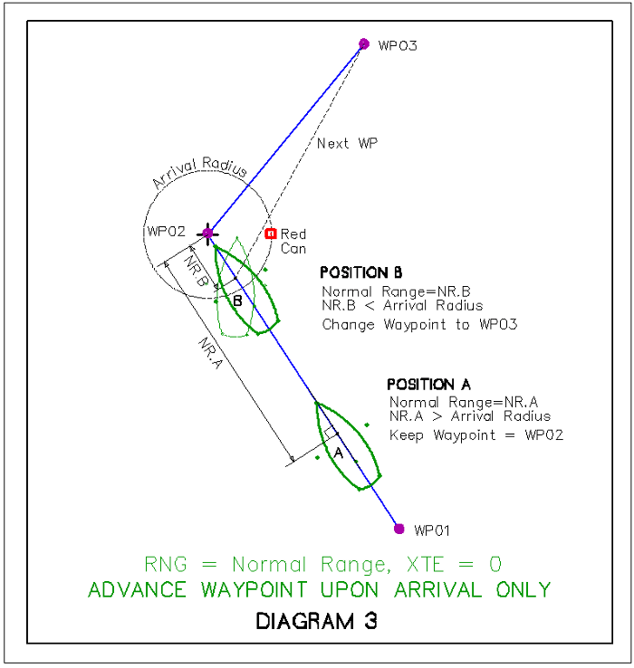
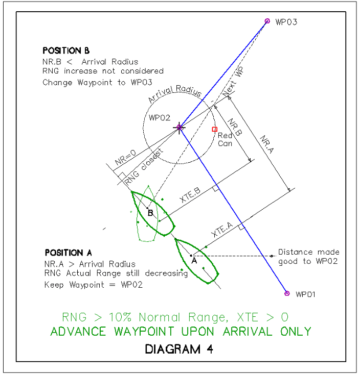

Please read
Advance route waypoint on arrival only first. Here is a detailed discussion of Options→Ships→OwnShip→Advance route waypoint on arrival only.
With an Active Route, in the Active Route Console “This Leg” is visible near the upper right corner of the screen in the console:

RNG (actual range) Distance to the next waypoint.
NR (normal range) Distance from destination waypoint to a line orthagonal to or at right angles to the current route segment which passes through ownship. When shown, NR is after RNG.

There are two general conditions:
1. RNG=NR On course with no cross track error (XTE=0)
2. RNG>NR Off course (sailing perhaps) with cross track error (XTE>0)
When the difference is greater than 10% both values are shown in “RNG”
The “normal” range is the second number shown. 1.88 in this case.
The four diagrams below represent four different conditions:
1. RNG = NR and XTE=0 (Boat is on the route)
2. RNG > NR and XTE>0 (Boat is off the route), which corresponds with the dialog shows both RNG and NR (When there is a 10% difference between NR and RNG).
Additionally Waypoint Advance (Default and Option) Alternatives:
3. Waypoint Advance (Normal default).
4. Advance Waypoint upon Arrival only. (Option checked)
Waypoint Advance (Normal default)
When following a Route OpenCPN normally decides to advance to the next waypoint if at least one of the following two conditions apply.
- NR (normal range) is less than the declared arrival radius. OR
- RNG (actual range) is increasing for 2 seconds. Ownship is moving away from the target waypoint, and has been for more than two seconds.
Waypoint Advance (Normal default) when Range (RNG) = Normal Range (NR) and XTE=0 or near 0

Waypoint Advance (Normal default) when Range (RNG) is 10% > Normal Range (NR) and XTE >0

Option: Check Advance route waypoint on arrival only. With this activated., OpenCPN only advances the route to the next waypoint, if condition 1 above is true (NR<Arrival Radius). Condition 2 is ignored.
Advance route waypoint on Arrival only (is checked) when Range (RNG) = Normal Range (NR) and XTE=0 or close

Advance route waypoint on Arrival only (is checked) when Range (RNG) is 10% > Normal Range (NR) and XTE>0
[Editor's Note: Diagram needs correction. Boat B location Normal Range should be shown at the arrival radus with boat staring turn.]

Advance Waypoint upon arrival only (option) is useful when sailing and you can't lay the next mark and are forced to tack to reach it. It allows a ship to move away from waypoint without automatically advancing to next waypoint.
Note: Waypoint Advance (normal default) is dependent on NR < Arrival Radius OR RNG increasing more than 2 seconds, so what this option does is overide that second condition.
Advance Waypoint upon arrival only (option) ensures that the next current waypoint remains active
1. NR<Arrival Radius is reached OR
2. A line just inside of the Arrival Radius which is also “normal” or perpendicular to the marked route is reached. In this case there is a cross track error.
On the other hand….
Waypoint Advance (normal defualt) helps you if you really want to cut a corner by a large distance, in such a way that the “normal range” will never be less than (Arrival radius). The second condition, RNG increases for > 2 seconds, willl automatically advance the route to the next waypoint in this case.